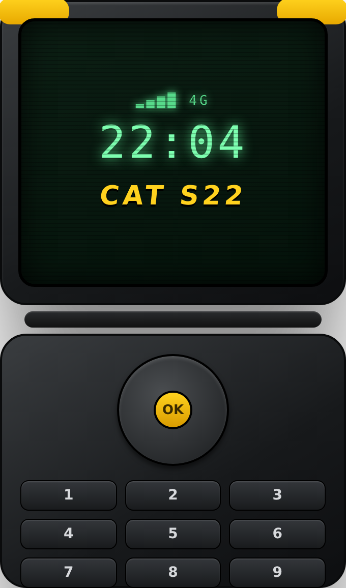
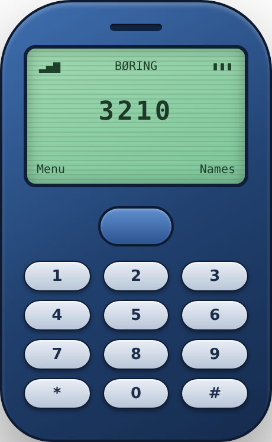
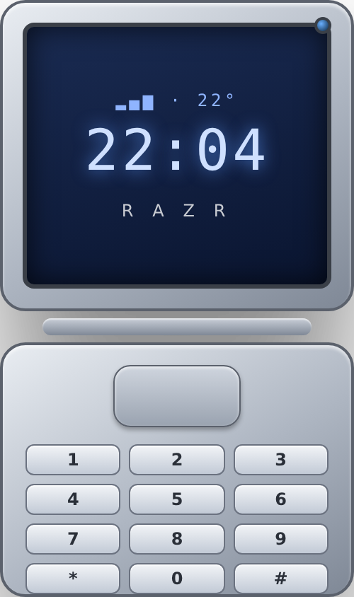

Put the phone down.
Your attention is the most expensive thing you own — and you've been renting it out for free. boringphone.co is a tiny corner of the old internet dedicated to getting it back.
Everything here is a window. Open a few. Move them. Break nothing.
⚠️ First, the truth
You can't drain and "reset" your dopamine by being bored for a day — your brain isn't a fuel tank. The term was coined in 2019 by psychologist Dr. Cameron Sepah as a tidy nickname for a plain-old CBT technique: deliberately stepping back from compulsive, high-stimulation habits — the endless scroll, the binge, the refresh — so ordinary life starts to feel good again.
The facts
- Dopamine isn't the "pleasure chemical." It's mostly about motivation, anticipation, and reward prediction — the wanting, not the having.
- Your brain never runs out of it. Fasting doesn't lower or "refill" dopamine; it interrupts compulsive loops.
- The real targets are the slot-machine apps: infinite feeds, autoplay, notifications, junk food, impulse shopping.
- Novelty is the drug. Every swipe promises "maybe something better next" — and that maybe is exactly what keeps you pulling the lever.
The benefits (of cutting the compulsive stuff)
- 🌿Everyday things feel good again — a walk, a book, a real conversation stop feeling flat.
- 🎯Longer attention span — focus returns when you stop training your brain on 8-second clips.
- 😌Less anxiety & FOMO — the fear of missing out fades when you stop checking.
- 🌙Better sleep — no 1am doomscroll, no blue-light casino in bed.
- ⏳Hours back — the average scroll-hole is 3–4 hours a day. That's a part-time job.
- 💪Stronger impulse control — every "not right now" is a tiny rep for your willpower.
Not medical advice — just a nudge. Sources live in Fun Facts.txt.
Rendered in-house, no app store required. The whole point: a phone that does less.



// fun facts & sources — every link works, opens in a new tab
- The word dopamine describes wanting more than liking. → Dopamine (Wikipedia)
- "Dopamine fasting" was popularized by Dr. Cameron Sepah as a CBT reframing. → Dopamine fasting (Wikipedia)
- Compulsive scrolling has a clinical name: problematic smartphone use. → Problematic smartphone use
- The Nokia 3310 sold ~126 million units and became the internet's favorite "indestructible" meme. → Nokia 3310
- Feature phones / "dumbphones" are having a genuine revival among people cutting screen time. → Feature phone
- The CAT S22 Flip is a real rugged Android flip phone made under license by Caterpillar's phone brand. → Cat phones
- That nostalgic dial-up handshake screech was two modems negotiating a connection out loud. → Dial-up Internet access
- Slot machines and social feeds share a trick: the variable-ratio reward schedule. → Intermittent reinforcement
No form. No algorithm. No "team." Just me — and the one feed I'll admit to.
♪ @jairov3690follow on TikTok ↗or, the analog way
hi@boringphone.coI reply slower on Sundays. That's the whole point.
Cannot empty Dopamine.
It is a naturally occurring neurotransmitter and cannot be moved to the Recycle Bin. Nice try, though.